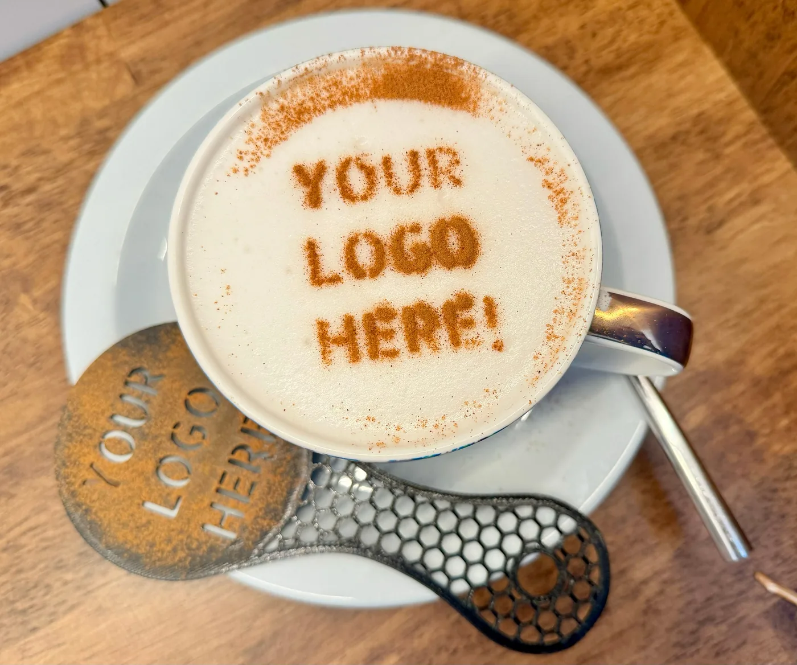
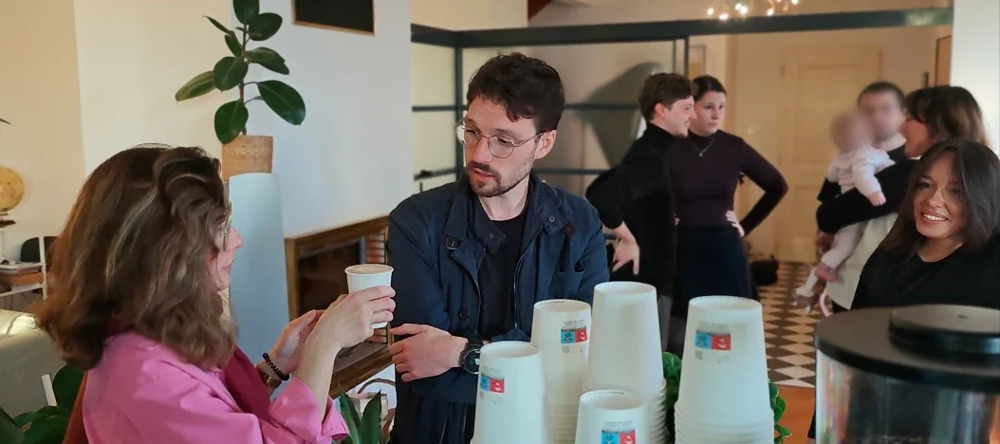

Le vrai produit, ce sont deux minutes d’attention
Dans un salon, une inauguration ou une journée portes ouvertes, le problème n’est jamais la fréquentation. C’est l’attention. Les gens passent, regardent trois secondes, continuent. Les tenter avec un stylo ou un tote bag ne change rien : ils prennent l’objet et s’en vont.
Un café change la mécanique. Votre invité s’approche parce qu’il en a envie, pas parce qu’on l’a abordé. Il passe commande. Et là, il attend. Deux minutes environ, le temps de l’extraction et du lait. Deux minutes où il est immobile, de bonne humeur, et disponible.
C’est ce créneau que nous vendons. Le café en est le prétexte.
Un prospect abordé dans une allée vous donne dix secondes. Le même prospect, un gobelet en préparation devant lui, vous en donne cent vingt.
Ce que votre marque occupe réellement
Quatre surfaces, et elles n’ont pas le même usage. Autant le savoir avant de choisir :
| La façade du comptoir | Visible de loin. C’est elle qui fait venir les gens et qui apparaît sur les photos d’ambiance de l’événement. | 200 € |
|---|---|---|
| Les gobelets | Ils circulent. Votre logo quitte votre stand dans la main de quelqu’un et traverse tout le lieu. | 200 € |
| La mousse des boissons | Votre logo imprimé à l’encre alimentaire sur le café. C’est l’élément que les invités photographient spontanément. | 150 € |
| Le menu | Des noms de boissons que vous choisissez. Un détail, mais c’est souvent lui qui fait sourire et engage la conversation. | compris |
Vous pouvez n’en prendre qu’une. Si vous hésitez et que l’objectif est que votre marque sorte de votre stand, prenez les gobelets avant le reste.

Décidez d’abord ce que vous voulez en retirer
La question qu’on nous pose le plus souvent est « combien ça coûte ». La question utile arrive avant : qu’est-ce qui ferait que, le lendemain, vous considériez la journée comme réussie ? La réponse change ce que nous installons, où, et comment nous servons.
Vous voulez rencontrer des prospects
Alors le bar se place à l’entrée de votre espace, pas au fond, et le service est volontairement un peu lent. L’objectif n’est pas de servir le plus de cafés possible : c’est que vos commerciaux aient quelqu’un à qui parler en permanence. À observer : le nombre d’échanges réellement tenus, de cartes prises, de rendez-vous posés.
Vous voulez de la visibilité
Alors on mise sur ce qui circule et ce qui se photographie : gobelets personnalisés, logo sur la mousse, façade habillée. À observer : ce que vos invités publient, ce que vos propres photos vous donneront à réutiliser ensuite.
Vous voulez soigner des gens que vous connaissez déjà
Clients fidèles, partenaires, équipes. Là, la personnalisation compte moins que la qualité du moment. À observer : ce qu’ils vous en disent, et s’ils en reparlent la fois suivante.
Ces repères ne sont pas des promesses. Ce que vous en retirez dépend aussi de votre offre, de votre public et de ce que vos équipes en font. Mais les choisir à l’avance vous évite de juger l’événement sur le seul nombre de gobelets servis, qui ne veut rien dire.
Le moment où votre invité est à vous
- Il repère le bar Une vraie machine, un barista, une odeur de café. Ça se voit de loin et ça n’a pas l’air d’un stand.
- Il commande Le menu porte vos mots. Il choisit, il demande parfois ce que c’est. La conversation est déjà commencée.
- Il attend Deux minutes. C’est votre fenêtre. Personne de votre équipe ne devrait la laisser passer.
- Il repart Avec votre logo dans la main, et souvent une photo de sa boisson dans son téléphone.

Ce qui reste après
Un événement se termine, les photos restent. Et la particularité d’un coffee bar, c’est que ce ne sont pas seulement les vôtres : ce sont celles que vos invités prennent eux-mêmes, parce qu’un logo dessiné sur une mousse de café donne envie d’être photographié.
Nous ne vous promettons pas de chiffres là-dessus : personne ne peut garantir qu’une publication sera faite. Ce que nous pouvons dire, c’est que c’est le seul élément de votre dispositif que vos invités ont spontanément envie de montrer. Prévoyez simplement quoi en faire ensuite : un visuel réutilisé la semaine suivante vaut mieux qu’un dossier de photos jamais rouvert.
Le budget et les délais, sans rendez-vous
350 € pour la prestation de base : un barista, le coffee bar, 1 h 30 de service, jusqu’à 50 invités, boissons à volonté. Au-delà, le prix suit le nombre d’invités, la durée et le nombre de journées. Les personnalisations s’ajoutent au tarif ci-dessus.
Le déplacement est gratuit dans un rayon de 20 km autour de Charleville-Mézières. Au-delà, le trajet aller-retour est calculé et apparaît dans le devis.
Le seul vrai délai est celui des gobelets : deux semaines pour l’impression et la livraison. En dessous, c’est faisable, avec un supplément de 50 €. Tout le reste peut se décider plus tard.
Vous pouvez obtenir le chiffre exact en deux minutes, en ligne, sans nous parler et sans engagement.
Ce qu’il faut prévoir, et ce qui n’est pas compris
- Un emplacement d’environ deux mètres sur un, et un accès pour entrer le comptoir.
- Une prise électrique.
- Nous arrivons environ une heure avant le service et nous rangeons notre installation après : c’est compris.
- Si le trajet aller dépasse quatre heures, un hébergement est à prévoir. Il n’est pas compris dans le devis et nous vous le disons avant, pas après.
Les questions qu’on nous pose
Qu’est-ce qu’une activation de marque, concrètement ?
C’est un dispositif qui fait vivre quelque chose à votre public au lieu de lui adresser un message. Une affiche s’adresse à une audience ; une activation crée une interaction, une personne à la fois. Le coffee bar en est une forme simple : votre invité s’approche de lui-même, parce qu’il a envie d’un café, et vous obtenez son attention sans l’avoir interrompu.
En quoi un coffee bar vaut mieux qu’un goodies ?
Un objet promotionnel se range et s’oublie. Une boisson se consomme sur place, pendant que la personne est encore devant vous. Et surtout, la préparation prend environ deux minutes : c’est un temps d’attente que votre invité accepte volontiers, et pendant lequel quelqu’un de votre équipe peut lui parler. C’est la seule chose que nous vendons vraiment : ces deux minutes, répétées cent fois dans la journée.
Que peut-on personnaliser ?
Quatre surfaces : la façade du comptoir, les gobelets, la mousse des boissons et le menu affiché. Vous pouvez en choisir une seule ou les quatre. Les tarifs sont indiqués plus haut sur cette page et dans le devis instantané.
Combien de temps à l’avance faut-il s’y prendre ?
La prestation elle-même peut se caler rapidement si la date est libre. Ce sont les gobelets personnalisés qui commandent le calendrier : comptez deux semaines pour l’impression et la livraison. En deçà, c’est encore possible, avec un supplément de 50 € pour l’accélération. L’habillage du comptoir et le logo sur les boissons se décident plus tard.
Quel budget prévoir ?
La prestation de base est à 350 € : un barista, le coffee bar, 1 h 30 de service et jusqu’à 50 invités, boissons à volonté. Au-delà, le tarif suit le nombre d’invités, la durée et le nombre de journées. Les personnalisations s’ajoutent. Le déplacement est gratuit dans un rayon de 20 km autour de Charleville-Mézières. Le devis se calcule en ligne, sans rendez-vous et sans engagement.
Vous déplacez-vous en dehors des Ardennes ?
Oui. Nous intervenons régulièrement à Reims, et nous nous déplaçons jusqu’à Paris, Lille, Bruxelles et le Luxembourg. Au-delà de 20 km, le trajet aller-retour est facturé et apparaît dans le devis avant que vous ne validiez quoi que ce soit.
Que faut-il prévoir sur place ?
Un emplacement d’environ deux mètres sur un, un accès pour entrer le comptoir, et une prise électrique. Nous arrivons environ une heure avant le début du service et nous rangeons notre installation après. Si le trajet aller dépasse quatre heures, un hébergement est à prévoir ; il n’est pas compris dans le devis.
Dites-nous ce que vous voulez obtenir
Votre date, votre lieu, le nombre d’invités : le tarif s’affiche tout de suite. Et si vous préférez en parler d’abord, appelez-nous.